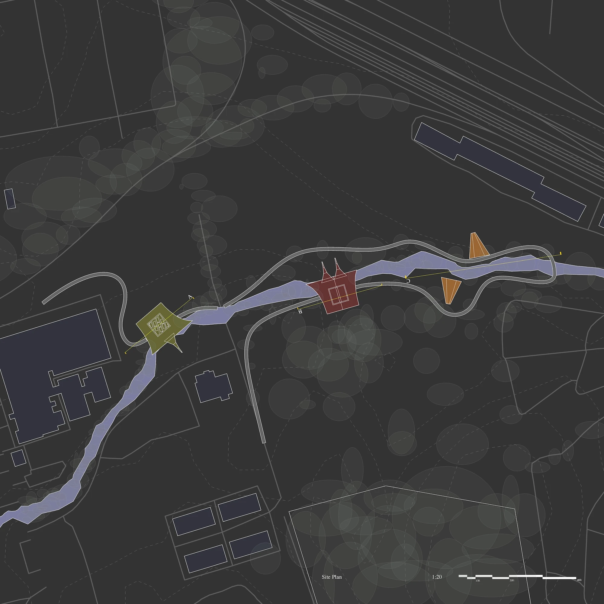
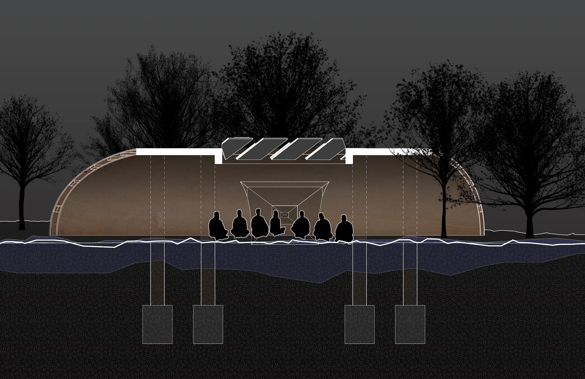
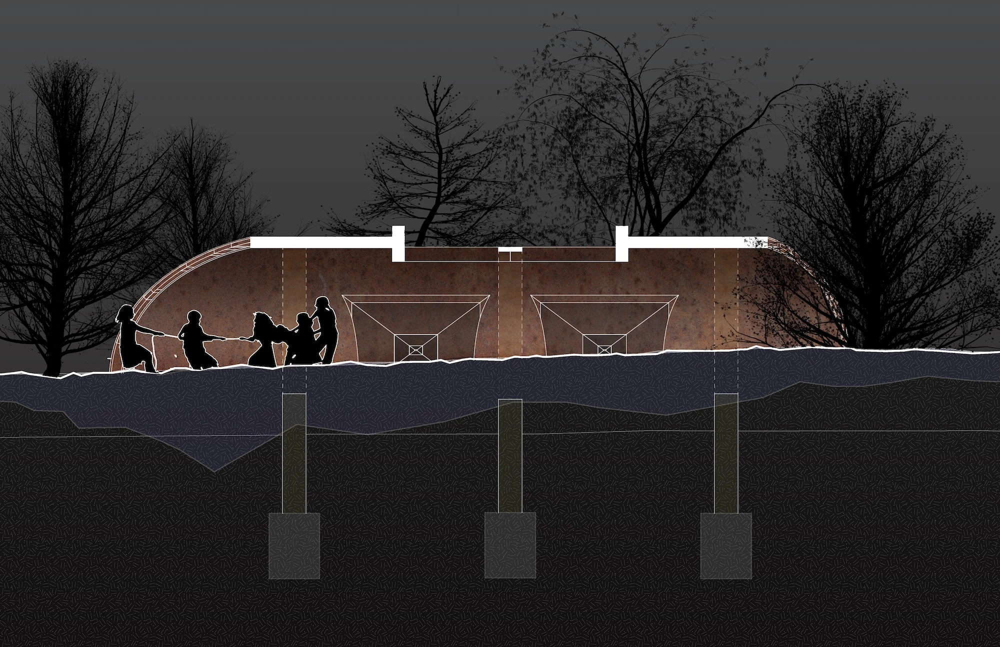
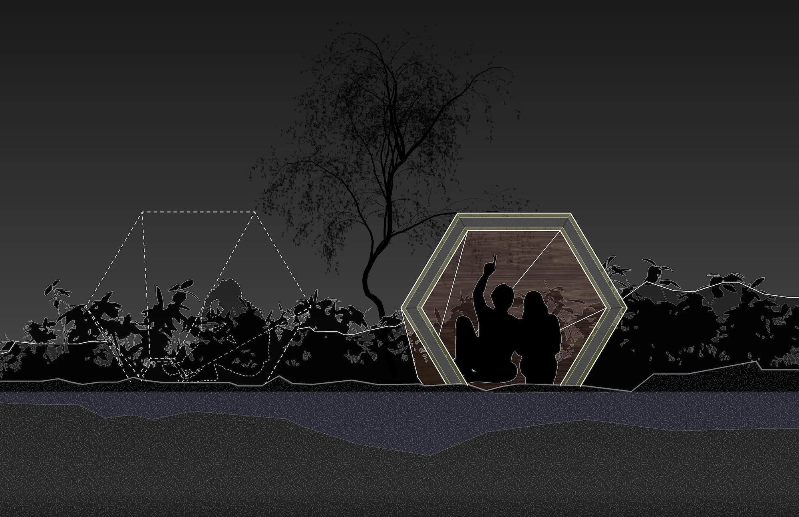
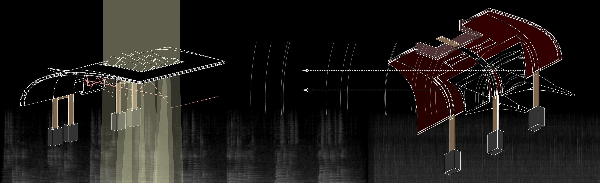
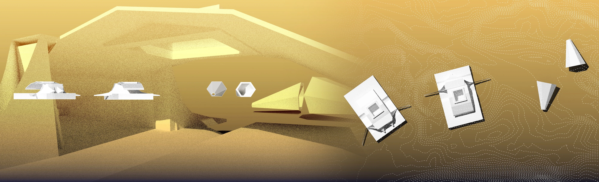
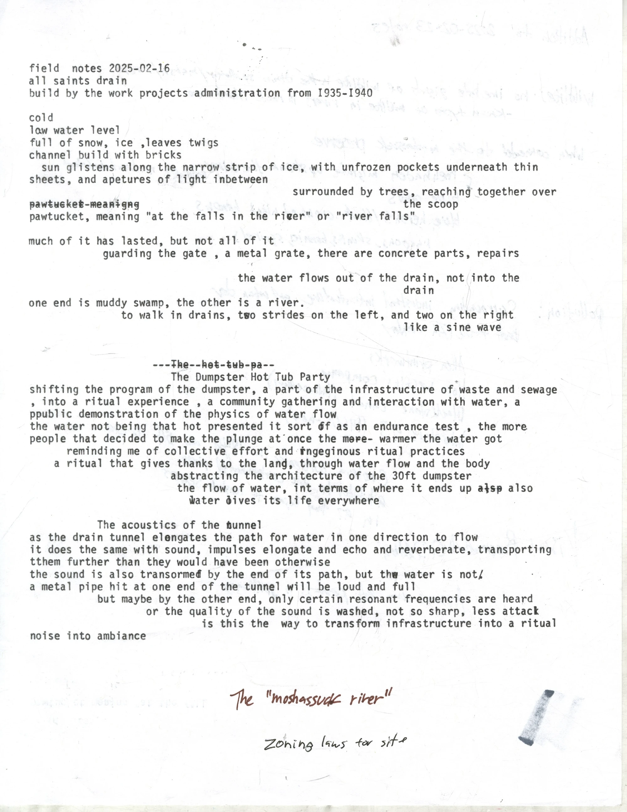
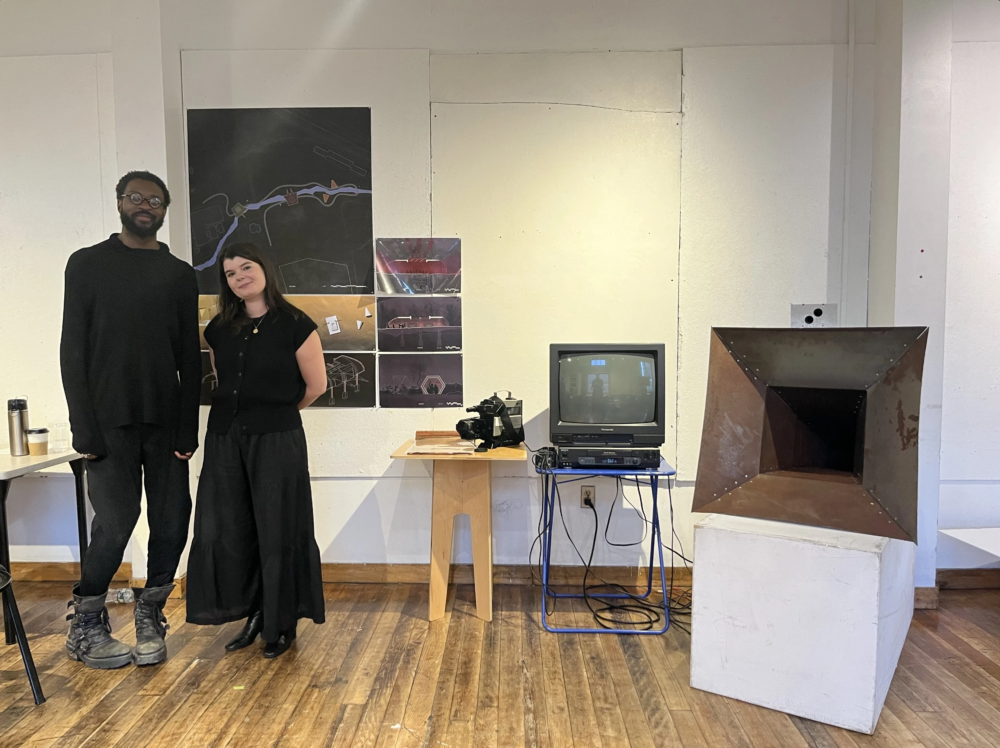

Urban Metabolism
An extention of states of exception
The speaker horn creates an enclosure for acoustics, directly amplifying the sound of the river passage on its journey, in its loud and quiet moments. The pavilion creates a ritual space for sonic exfoliation. A place for ambiance and meditation, for performance and research. With no direct program, the sound and environment inform actions taken in the space. With both passive and active horns, the sound of water, the environment, and human interaction are amplified to reorient and intervene the user as well as nature and the surroundings infrastructure.






Act 1
The spillway is located locally on Smithfield ave near Legion drive, in between a baseball field and a graveyard. During my visits, the water in the spillway was low, but always flowing. At the grate of the tunnel you can hear the reverberation from the cars passing over the manhole nearby. The snow surrounding the spillway and the ice along the cobblestone path and made it difficult to navigate. There were a few waterfalls, from random paths, and new drains that connected. the spillway became quieter as i ducked under fallen trees. the ice coated the low skinny water path in a thin layer, making a wonderful sploshy crunch sound as I walked along. The end of the spillway widened and shallowed, and was full with icy, dark water, before leading to mush, and eventually rejoining with the rest of the river. the air was cold and it was partly cloudy, it had not rained recently.

